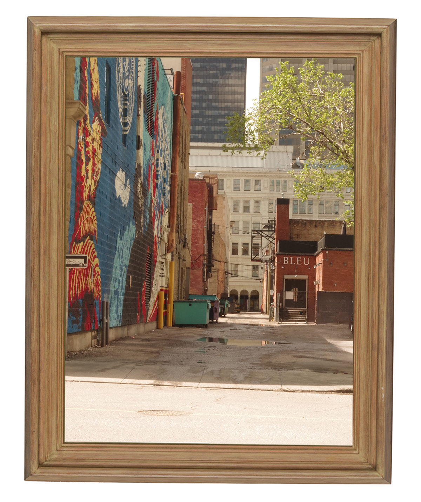
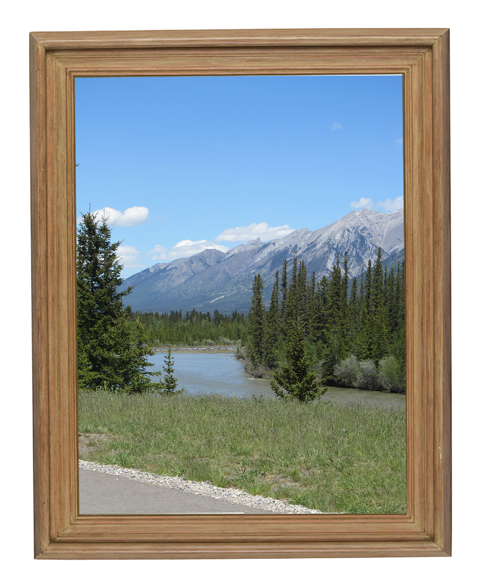
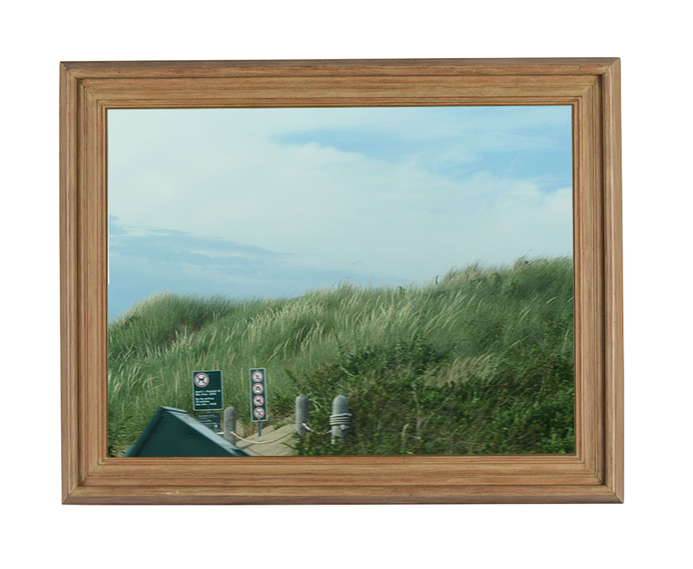

~Gallery~





Abbi Murphy is in her first year at Lethbridge Polytechnic
pursuing the two-year Multimedia Production diploma. She wishes to
concentrate on writing and research, graphic design, and video to
develop the creative and technical skills needed in her goal to
land her dream job as an exhibit designer. Planning to continue
her studies of art history abroad, Abbi hopes to merge her
passions of creativity and multimedia with her interests in art
and history to create meaningful exhibitions. Abbi has always been
creative, drawing inspiration from other artists, and
collaborating with peers. Abbi hopes to help artists' creativity
and innovation reach people around the world.
Before attending Lethbridge Polytechnic, Abbi was not a fan of
school, diagnosed with ADHD and a panic disorder towards the end
of grade ten. Abbi wished to explore her various interests at home
rather than attend her math and science classes. However, Abbi did
find her humanities and English classes worthwhile; as she enjoyed
learning about past world issues, seeing how they reflect society
today. She also enjoys taking the time to dive deeply into a
character's mindset and world, examining traits and how they
influence both character choices and plot growth. In her younger
years, Abbi was involved in various activities like dance,
cheerleading, gymnastics, and soccer, where she received rewards
and scholarships for her talent and accomplishments in these
fields.
Outside of school, Abbi enjoys spending time with her family,
baking, reading, and working on creative projects such as painting
and photography. She enjoys various youtubers, her favourite being
"Dylan is in Trouble", who does movie commentarys. She listens to a diverse selection
of music and follows artists like Jessie Murph, LISA from
BLACKPINK, BLACKPINK, and Alex Warren. Abbi is interested in
history and is currently learning French independently, intending
to attend the
Languages Program
in Quebec in May 2026 for a five-week second-language French
course. She also hopes to volunteer at different museums to
explore her interests and gain knowledge from mentors in her
desired field.
Born in Halifax, Nova Scotia, in April of 2006, she is the
youngest of three children in a family of five. Having moved to
Calgary, Alberta, in 2017, Abbi visits friends and family every
summer. She enjoys exploring the East Coast and returning to fond
memories from her childhood. Abbi continues to be interested in
creativity and believes multimedia is the best way to stay
creative in a technological world, hoping to show her personality
in all her work. Abbi is excited to continue working towards her
goals and grow as a person in the coming years.